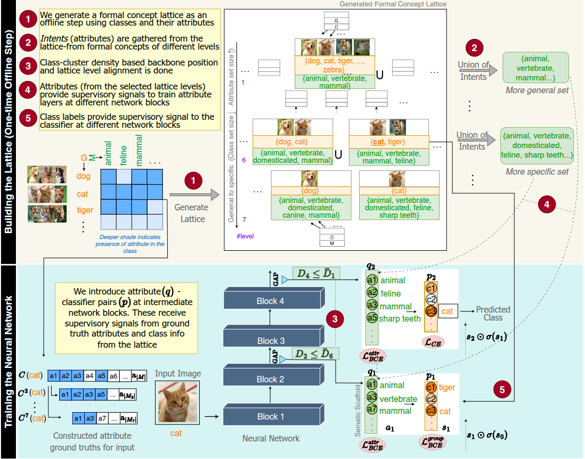
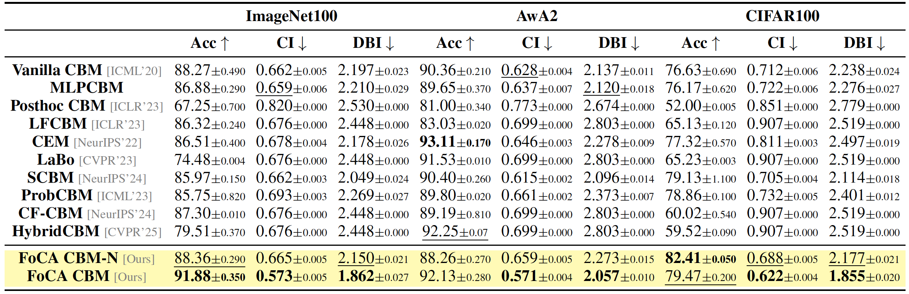
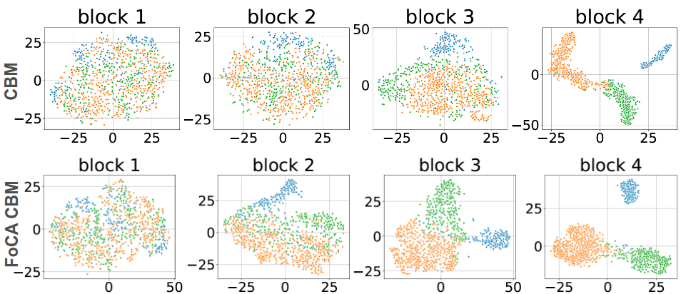
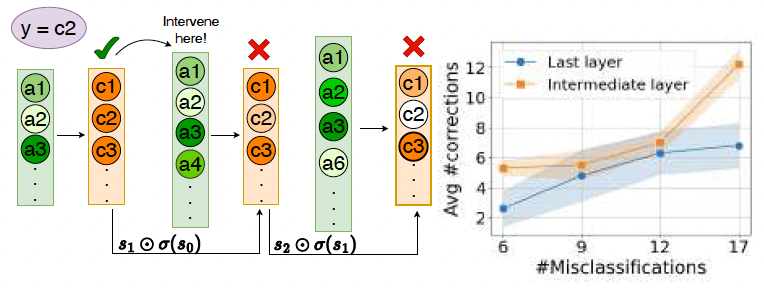
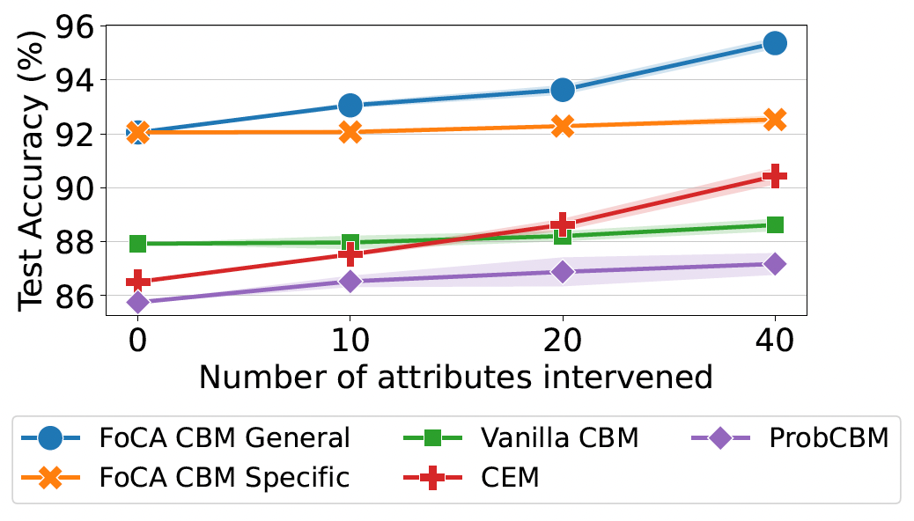
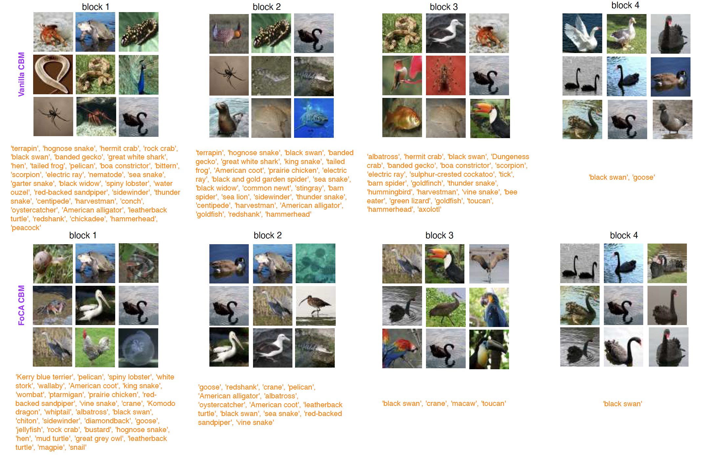

Formal Concept Analysis (FCA) provides a mathematical framework for understanding hierarchical relationships in data. In FoCA-CBMs, we leverage formal concept lattices to create structured semantic hierarchies in concept-based models. The key insight is that concepts naturally emerge at different levels of generality in neural networks. Attributes shared by many classes are general (appearing in shallow layers), while those specific to few classes are specialized (appearing in deeper layers). This allows us to guide where concepts should be learned throughout the network depth, creating a coherent semantic structure aligned with human reasoning.
Learning semantics is essential for deep learning models to be interpretable and better aligned with human reasoning. Concept-based models approach this by representing classes through meaningful semantic abstractions, but typically treat all concepts as a flat, unstructured set learned at a single neural network layer. This overlooks a fundamental property of human semantic understanding: concepts being organized hierarchically, from general to specific. While deep networks do learn a hierarchy of visual features, this structure is rarely aligned with explicit semantic hierarchies. Drawing on Formal Concept Analysis, we demonstrate that formal concept lattices provide principled semantic scaffolds to guide neural network learning. These lattices naturally identify where in the network concepts should be learned based on their level of generality. This allows the model to develop staged, semantically grounded representations throughout its depth. Empirical results on real-world datasets show that our models produce more interpretable embeddings, support more effective interventions, and learn concept representations that are both meaningful and hierarchically structured.
We evaluate FoCA-CBMs on real-world datasets including ImageNet100, CIFAR100, and AwA2. Our experiments demonstrate that formal concept lattices significantly improve the quality of learned representations compared to flat concept-based models. Key findings include:


Our analysis shows that FoCA-CBMs naturally organize concept embeddings into hierarchical clusters. General concepts (shared by many classes) form larger, more overlapping clusters, while specialized concepts (specific to few classes) form distinct, well-separated clusters. This hierarchical organization emerges naturally from the formal concept lattice structure without explicit clustering constraints.


FoCA-CBMs support more effective interventions than flat concept-based models. By intervening on concepts at appropriate levels in the hierarchy, users can make targeted corrections that propagate through the model in a semantically meaningful way. Multi-level interventions (left) show how correcting general concepts affects downstream predictions, while oracle interventions (right) demonstrate the upper-bound performance achievable through concept interventions.

Qualitative analysis reveals that FoCA-CBMs learns visually coherent and semantically meaningful concepts. The hierarchical structure ensures that general concepts (like "texture" or "shape") appear in early layers and are shared across many classes, while specific concepts (like "beak" or "wing" for bird classification) appear in deeper layers specific to certain classes. This structure aligns well with how humans organize semantic knowledge and improves the interpretability of the model's decision-making process.
@article{focacbms,
author = {Deepika SN Vemuri and Sayanta Adhikari and Ankit Saha and Krishn Vishwas Kher and Vineeth N Balasubramanian},
title = {Formal Concept Lattices are Good Semantic Scaffolds for Concept-Based Learning},
journal = {International Conference on Machine Learning (ICML)},
year = {2026}
}